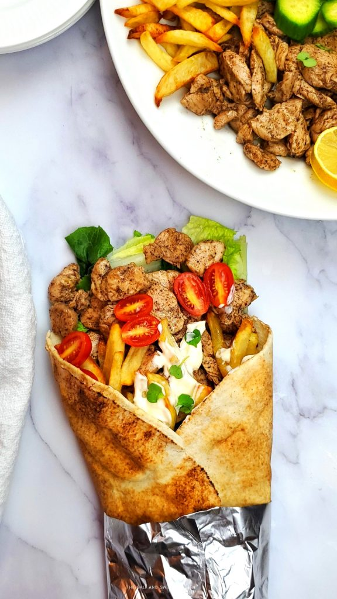

Shawarma Recipes

Lebanese Chicken Shawarma
Shawarma is a popular Middle Eastern street food that
is made with very thin slices of meat, stacked in a
cone-like shape, and roasted on a slowly-turning
vertical spit. These thin slices of meat are then
shaved and served on pita bread wraps.
Shawarma can be made with lamb, beef or chicken.
Ingredients
- Chicken breast650g
- Onion 1pc
- Middle-Eastern spice mix2 cups
- Pita bread3 pc
- Extra-virgin olive oil1 Tbsp
- Garlic mayo1 cup
Steps
- Cut the chicken and onions into thin strips and set aside
- In a large bowl, add the spice mix and whisk with olive oil
to combine
- Add the chicken strips into the marinade and evenly coat
- Cover the bowl and place in fridge for at least an hour
- Grill the chicken and pita bread
- Wrap it up with garlic mayo and some onion slices